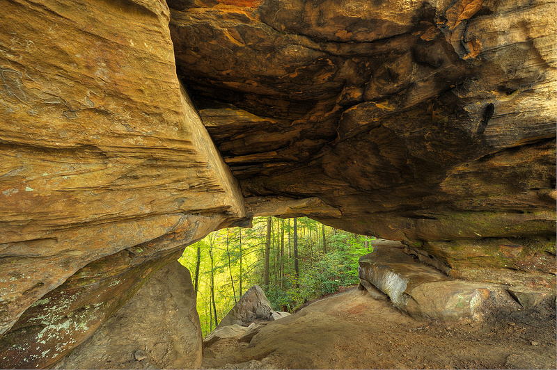

About This Project
This project showcases different arches in the United States layered on top of a hillshade. While largely focusing on Red River Gorge, this web map allows readers to interact with different natural arches around the country and discern their locations. Hiking in Red River Gorge is one of my favorite hobbies, so I hope you enjoy this imagery. Curious about these arches in real life? Check out these pictures!
Silvermine Arch, Red River Gorge. Silvermine Arch measures 58 feet long and 9 feet high. Photo by: Chuck De La Rosa

Whistling Arch, Red River Gorge. Whistling Arch measures 11 feet long and 4 feet high. Photo by: Kerry Mark Leibowitz
Double Arch, Red River Gorge. Double Arch can be reached from Double Arch Trail, which is approximately 4.4 miles. Photo by: imgur.com
 Natural Bridge, Red River Gorge. Natural bridge is one of the most popular arches in the gorge and measures 78 feet long and 65 feet high. Photo by: redrivergorge.com
Natural Bridge, Red River Gorge. Natural bridge is one of the most popular arches in the gorge and measures 78 feet long and 65 feet high. Photo by: redrivergorge.com